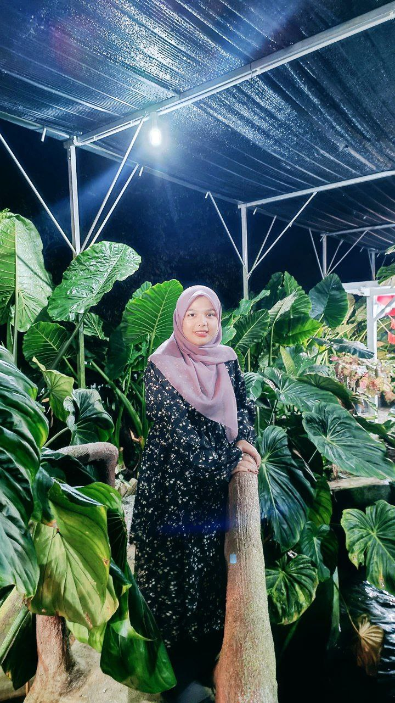

My Background
I come from a diverse background with a passion for learning and growth. Here are some key points about my background:

- Education: I have a diploma in Library Informatics from UiTM Cawangan Sungai Petani, Kedah.
- Experience: I have experience as Ceragem Staff Ceragem Sdn Bhd. Gong Badak, Kuala Terengganu 2023.
- Skills: I possess skills in teamwork and have a strong interest in group projects.
- Achievements: I have achieved and won in Junior Invetor project and continue to strive for excellence in everything I do.